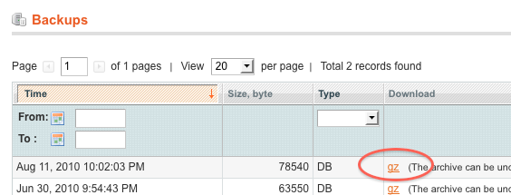
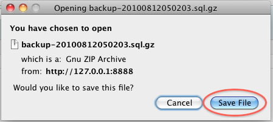

This is a blog post about Magento backups, how you can do them by default in Magento and how a new extension I have made called Cloud Backup will help to make them automatically and send them offsite to Amazon’s S3 storage service – increasing the chance you’ll have a recent backup if (when) bad things happen to your store or server. I’d like your help beta testing this new extension, and this post will hopefully convince you why that’s mutually beneficial for us. The extension is still pending on Magento Connect so give it a whirl, I’ll update this post with the link shortly, or for those that are particularly keen to test it, you can download the release directly and install it manually.
Making a backup of your Magento Store is an important part of the admin duties for a store owner, without a backup you would be at risk if your web host failed, went belly up or disappeared off the face of the earth. More importantly, some countries require you by law to keep accounting records for several years, for example in New Zealand it’s 7 years! So if that data gets lost, or corrupted by your web host, you have a real problem not just because your store is hosed.
For those of you that didn’t know already, as well as making the best email extension for Magento, I also have a fairly busy day job over at World Wide Access. We run a number of web stores where we export and sell New Zealand products into the US and UK markets. Solving this data security problem became a challenge for us and our solution, I think, is one that others may find valuable too. So we have bundled it up as an extension, and are making it available to others.
Our solution is full-store snapshot backup combined with the cloud data storage service provided by Amazon called S3. This combination allows automated off-site backups to a very reliable, highly available data storage service off-site. So if your web host screws up, or simply goes bankrupt and has their servers repossessed you have a safe, secure backup waiting if you need it. Sound good? We think so too.
The extension is very much still in beta, I have a number of features still in development, but I thought it’d be good to invite some other developers and store owners to begin trying it out, for free (to a reasonable limit!) so that I can get some feedback on the functionality as it stands. So if you are reading this, you are cordially invited to participate in our beta program.
How Magento Backups Work
The built-in backups provided by Magento are fairly laborious, you have to manually create them, then download them to your computer, and then hope that your local computer is more safe than your server. Here are the steps involved:
1. Navigate to the built-in Backup Tool
You can find the functionality tucked away in the System->Tools menu as shown below:

2. Create the DB Backup
Once you click the ‘Create backup’ button you’ll get a new entry in the list that represents your backup.

3. Download the Backup to your local computer.
Once you have the backup, it’s highly recommended to download it to you own computer, or store it somewhere other than where it is put by default.

If you do not download the backups locally, then they sit on the same server as your Magento store (and probably the same server as your database) which means if you lose one, you lose both. Not really useful at all.
Limitations of the built-in Backups
Aside from not being automatic, or offsite backups – one important thing to note is these are Database backups only, so if you have made customizations to your template, spent hours uploading product inventory photos, or have your own translations and email templates, these are not backed up by default.
How Our Magento Cloud Backups Work
Our new Cloud Backup extension offers several benefits over the default backup solution.
- Automated – Cloud Backup can be set to run daily (and in the future even more or less frequently to ensure you have the right level of data safety for your business.
- Complete – The backups we send offsite contain the entire database, but also all of the files within your Magento installation, so that if required you can rebuild everything from scratch quickly and easily.
- Viewable – Just being told a backup is ‘safe and sound‘ doesn’t really put my mind at ease. I prefer to actually see my backups. That’s why we have a bucket browser built in to the Magento admin interface.
- Downloadable – In addition to being stored in enterprise data centers with very low failure rates, you can elect to download any given backup to your own computer.
- Direct relationship with Amazon – I’m not a big fan of putting myself in between a store manager with a crashed server and their backup, that’s why we have set up the extension to work directly with Amazon, you pay Amazon for the storage and the backups are sent directly to Amazon, not us – hell hath no fury like a store owner scorned!
Features In The Pipeline
One of the other reasons we are running the Magento Cloud Backup beta program, is to determine which of the next round of features should make it in to the production product. Some of the ideas we have, that beta testers will be brain-picked about are:
- Backup Encryption – to ensure your data is even more secure, the risk of course is that you forget the key, then your backups are worthless.
- Recovery – allow your backups to be ‘hot swapped’ onto a running Magento store, either for real-live disaster recovery, or just development and testing purposes.
Interested yet? Then get the extension and let us know what you think.
Not convinced? Here’s the why sign up blurb…
- Cheap beta program – first GB free, then only 50 cents per GB-month after that
- Free support for install and debugging
- Free upgrades and eventually discounted access to the paid application
The extension is still pending on Magento Connect, I’ll update this post with the link shortly, in the meantime you can download the release directly and install it manually to test it out.
What a great concept!
Backups have always bern a pain, and it’s the ability to recover from failure that’s the key. Years ago I had to pick up the pieces and reconstruct a major database after two disk failures in a disk array over a holiday period and the ‘backups’ being done by the otherwise-capable sysadmin turned out to be useless. Yes they were routinely stored offsite but the tapes were blank and he’d never tested a recovery process. He had a nervous breakdown, poor guy, a company of several thousand employees suddenly had no revenue, but that didn’t help get the systems back up and running. It’s an experience I hope never repeat.
So hot recovery gets my vote. What better way to be able to test your backups than to b able to recover any one of them to a test instance?
I will be interested in beta testing. The most important thing in a backup process is the recovery process. your backup is as good as you can restore it. I already have an S3 account and I am doing the backup manually: zipping up the app file and the database file and ftp them to my computer then transferring them to S3. Pretty laborious process.
For recovery, the database files cannot be imported as such, I have to open the file and add some stuff to avoid issues with constraint keys. then I am good.
So if you can automate the whole process this is gold
So what features are available on the beta version?
Hi, Cool Moov – thanks for the feedback, that manual process is exactly what we are trying to eliminate by creating this extension. The problem with backups is it’s not until something goes wrong that you remember to do them!
As for restoring, that’s not a feature _yet_ but I assure you it’s the very next feature to be added. The tricky thing is that restoring a running Magento from the Magento you’re overwriting is both dangerous and tricky. But we can handle it!
The beta will automate your backup process, daily – and in a later version we’ll allow more/less frequent automatic backups. You can also view, delete, download and manage your backup buckets and files from within Magento. We’ll be continuing to improve the extension over the next month or two, so please get in to the beta program and have your say on features and functionality.
Cheers,
Ashley
Great theory for an extension, however I am a little confused. I installed the extension on our Magento 1.3.2.4 setup through Magento Connect. When I run the Offline Backups, it errors out saying I need to enter a code on the extension setup page. I can’t seem to find the extension setup page anywhere. Can you please point me in the right direction?
Hi, Brady – we’ve been in contact via email I think this problem is all sorted now.
Ashley,
I installed the extension using FTP. Here’s what I got:
Error: Cannot activate product.
Reason: No Activation Key configured.
Solution: Please input an activation key in order to use the offsite backup functionality.
How to escape out of it?
Hi, Prabu – did you sign up for an account through Amazon and input your activation key?
After entering a fresh activation key, go to the offsite backups section in the Tools menu and try running a manual backup. That’s a good way to test if the activation has worked.
Great stuff!
I already use the SMTP extension, and this new one looks promising… I have installed it and can’t wait for the new features to be added!
Hello,
I get This error when i go to system > tools > offsite backups
Error: It looks like your Magento cron job is not currently running. In order to create backups automatically you need cron configured. There is a guide to configuring cron here. Please contact us for more information or if this message is wrong.
System > Config > System > Cron:
15
20
15
10
60
600
any ideas?
Regards
Looks very good, for sure gonna give it a try. One stupid question I have is the hosting bandwidth of the server. When I schedule a full backup every night, let’s say 400 mb isn’t that gonna kill my hosting bandwith?
Thanks for this awesome extension. At this time i`m trying it out! Hope for further development of this extension.
Hi Ashley,
I’m looking for a Magento extension just like this one for backups.
Just a question about your charging model. You say the first GB is free and then 50c/GB/mth after that. Does the 50c/GB/mth include the S3 storage? (Or do I supply my own S3 acct?)
Cheers, Bruce.
Hi,
We use Amazon’s DevPay – so you pay us, we pay them. No need for your own S3 account.
Cheers,
Ashley
Hi Ashley, Thanks for the fast reply. It sounds all good.
I grabbed myself an activation key, installed the extension and tried to create my first backup.
Unfortunately I see a ‘500 Internal Server – This request takes too long to process, it is timed out by the server. If it should not be timed out, please contact administrator of this web site to increase ‘Connection Timeout’ after approx 2mins.
I had a look at my .htaccess (I’m using VPS.NET cloud hosting) and found “php_value max_execution_time 18000”.
I also had a look in the /var/backups folder and it looks like the ‘cloudbackup-xxx.gz’ files are being created.
Not really sure where to look further. Also, I am seeing the same Cron error that ‘Pat’ is. Is there any docos that show how to set up a cron job to run the extension?
Thanks a lot, Bruce.
Hello,
i am trying to take system backup from admin panel of my website but all the time it shows me internal server error & also it changes the permissions set on the cpanel. Please help me for that.
Thanks
Hi there very cool site!! Guy .. Excellent .. Superb .. I’ll bookmark your site and take the feeds additionally
Hi how i move media folder to another server or S3, my requirement is i want to run magento with 3 server, because our traffic is heavy , so please suggest ho i do that
Regards
Nitish